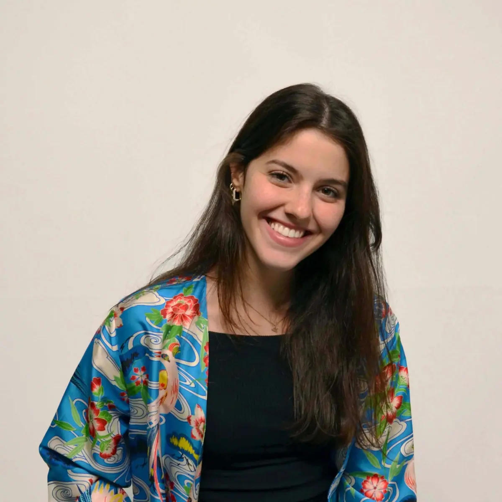
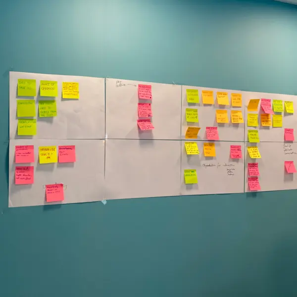
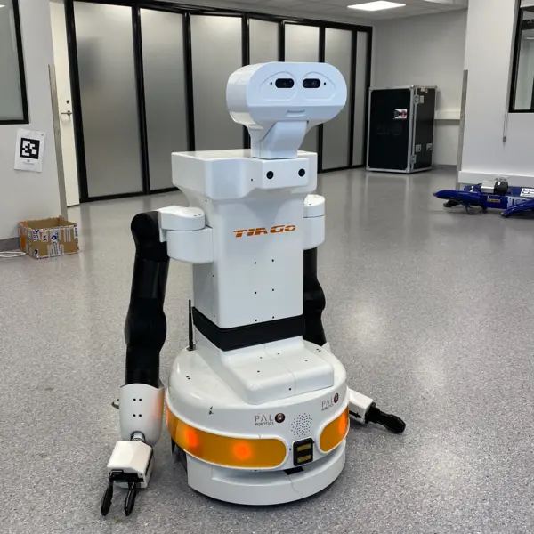
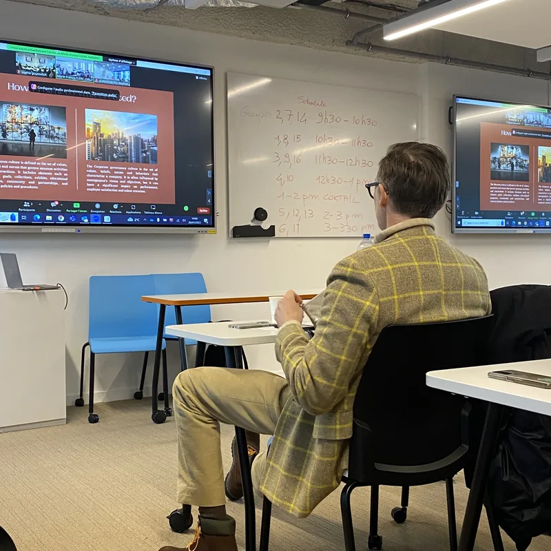
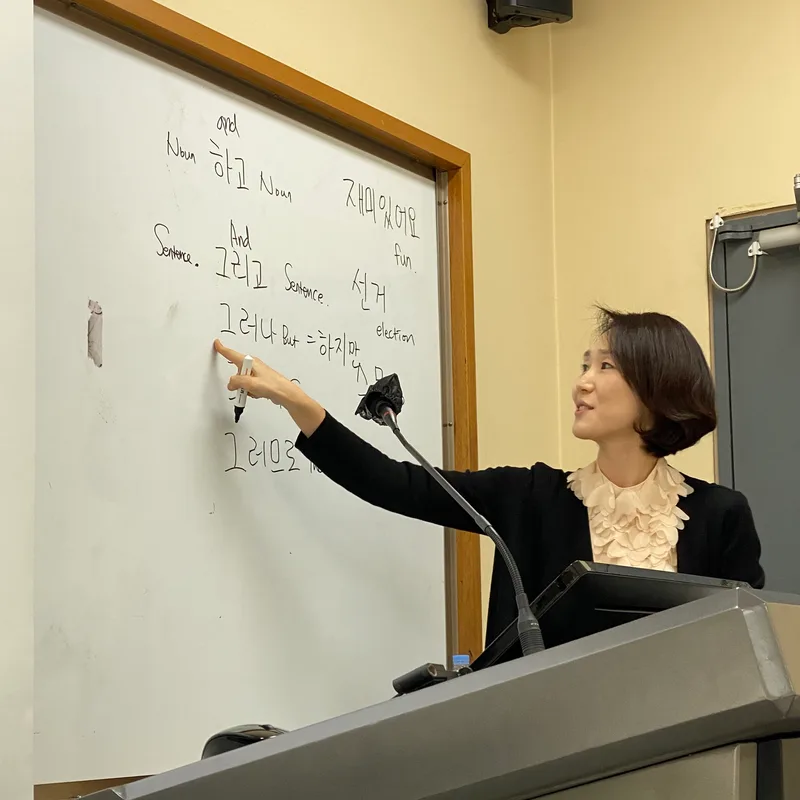
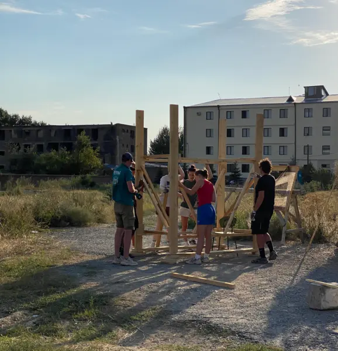
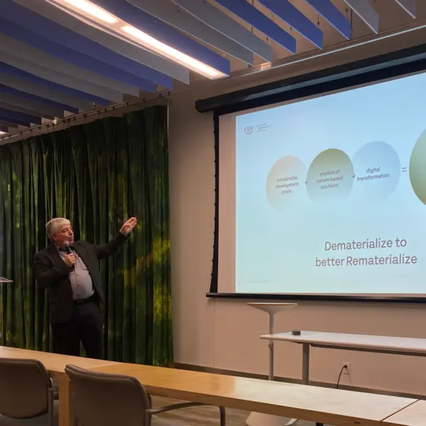

Service designer.
I bring organisations and
the people they serve
to the same table, through
UX research and
collaborative design.
Design Consultant in Milan.
Research that shapes decisions.
Every project brings at least two sides into the process: the people who commission a service or product, and the people who use it. Stakeholder workshops and end-user research run side by side, so the outcome reflects both.
Three habits that show up in every project.
Evidence before opinions
When possible, I start with mixed methods: surveys at scale to see the pattern, interviews and in-context observation to understand it. Decisions get easier when the room shares the same facts.
Design with, not for
Co-design workshops bring customers, business and tech teams to the same table. Students co-created the Nostra canteen; stakeholders co-defined the Utility App MVP.
Adapt to the context
I've worked across industries, team sizes and types of problem. I pick up new domains quickly and adapt methods to the people, constraints and time available.
Curious about cities, systems and the people inside them.

I work where user research, strategy and design meet, guiding projects from discovery to implementation in multidisciplinary teams.
At BIP I joined Officina, the company's design centre of excellence, as an intern in 2024 and was promoted to Design Consultant in 2026. Alongside client work, I proposed and led an internal research project on how Officina itself is positioned.
Studying at Politecnico di Milano, with exchanges in Norway and South Korea, taught me to design across cultures and languages, and grew my interest in public services, which led to my Master's thesis on Milan's metro.
Outside work I photograph cities: their infrastructure, rhythms and the small details that explain the bigger picture.
Experience
- Jun 2026 → nowDesign Consultant · Business Integration Partners S.p.A.Supporting project leads on research, service design and UX, and leading selected projects from discovery to implementation. Clients in energy, banking and telecom.
- Jan 2025 → Jun 2026Junior Design Consultant · Business Integration Partners S.p.A.User research, service mapping and co-design workshops for utilities and telecom.
- Sep → Dec 2024Design Intern · Business Integration Partners S.p.A.
- Jun → Sep 2022Interior Design Intern · IKEA Milan
Education
- 2022 → 2025MSc Product-Service System Design · Politecnico di Milano
- Feb → Jun 2024Exchange · Yonsei University, South Korea
- Jan → Jun 2022Erasmus · Østfold University College, NorwayHonourable mention for a human-robot interaction study.
- 2019 → 2022BSc Industrial Product Design · Politecnico di Milano
Workshops, classrooms and experiences that shaped me.





